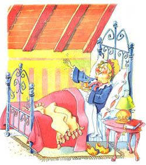

Жила однажды в далекой деревушке маленькая прелестная девочка. Ее мать и бабушка любили ее без памяти.
Бабушка сшила ей красную шапочку, которая была ей так к лицу, что все и стали звать девочку Красной Шапочкой.
Однажды мама напекла целый противень пирогов и говорит дочке:
- Красная Шапочка, бабушка заболела. Не отнесешь ли ты ей пирожков и горшочек свежевзбитого масла, как это указано в приведеной ниже табличке?
| № | Продукт | Количество |
|---|---|---|
| 1. | Пирожки с картошкой | 10 шт |
| 2. | Пирожки с капустой | 10 шт |
| 3. | Свежевзбитое масло | 1 горшочек |
Красная Шапочка тут же встала и отправилась к бабушке. А бабушка ее жила в другой деревне, за густым, диким
лесом.
Проходя через лес, она встретила волка. Волк хотел было ее съесть, но побоялся, поскольку недалеко работали дровосеки. Поэтому он придумал план.
- Куда ты идешь, моя крошка? - спросил волк.
- Повидать свою бабушку, - сказала Красная Шапочка. - У меня есть для нее горшочек свежевзбитого масла и пирожки.
 - И далеко тебе идти? - спросил волк.
- И далеко тебе идти? - спросил волк.
- Далеко, - ответила Красная Шапочка. - Ее дом довольно далеко отсюда, первый с той стороны леса.
- Я тоже хочу навестить бабушку, - сказал хитрый волк. - Я пойду этой тропинкой, а ты другой. Посмотрим, кто из нас первый доберется туда.
Волк бросился бежать изо всех сил по самой короткой тропинке, а Красная Шапочка
пошла по самой длинной дорожке. Она собирала цветы, пела веселые песни,
играла с красивыми бабочками. Волк тем временем добежал до бабушкиного
дома. Он дважды постучал в дверь.
- Кто там? - спросила Бабушка.
- Это я, Красная Шапочка, - сказал волк голосом девочки. - Я принесла тебе пирожков и горшочек свежевзбитого
масла.
 Бабушка лежала в постели, потому что болела.
- Открой дверь и войди, - крикнула она.
Волк ворвался в комнату. Он не ел целых три дня и был поэтому очень
голоден. Он тотчас проглотил Бабушку. Потом он натянул на себя бабушкин
халат, забрался на постель и стал поджидать Красную Шапочку, которая через
некоторое время пришла и постучалась в дверь.
- Кто там? - спросил Волк бабушкиным голосом. Его голос был хриплым, но
Красная Шапочка подумала, что у Бабушки болит горло.
- Это я, Красная Шапочка, - сказала она. - Я принесла тебе пирожков и
горшочек свежевзбитого масла.
- Открой дверь и войди, - сказал волк таким ласковым голосом, насколько
мог.
Он натянул одеяло до самых глаз.
 - Поставь свою корзинку на стол и подойди ко мне, - сказал волк.
- Поставь свою корзинку на стол и подойди ко мне, - сказал волк.
Красная Шапочка подошла поближе. Она сказала:
- Бабушка, какие у вас длинные руки!
- Это чтобы получше обнимать тебя, моя дорогая, - сказал волк.
- Бабушка, какие у вас длинные уши!
- Это чтобы лучше слышать тебя, моя дорогая.
- Бабушка, какие у вас большие глаза!
- Это чтобы получше видеть тебя, моя дорогая.
 - Бабушка, какие у вас большие зубы!
- Бабушка, какие у вас большие зубы!
- Это чтобы съесть тебя! - сказал волк и проглотил Красную Шапочку.
Он так громко зарычал своим жутким волчьим голосом, что дровосеки
услышали его. Они вбежали в дом с топорами.
Они размахнулись своими топорами и убили волка. Из волчьего живота тотчас вылезли Бабушка с Красной Шапочкой, живые и
здоровые. Они зарыли волка в лесу и пригласили дровосеков на чай. К чаю были поданы вкусные пирожки со
свежевзбитым маслом.